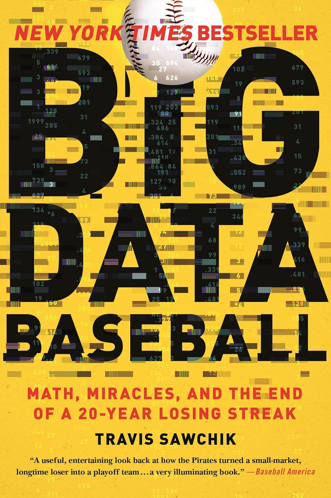

1992年10月14日，国联冠军赛第七场，第九局下半两出局，行动迟缓的匹兹堡海盗替补跑垒员西德·布里姆（Sid Bream）从二垒被一记安打送回本垒，勉强滑垒得分，勇士队完成逆转，把海盗挡在了世界大赛门外。那一刻之后，海盗队坠入北美职业体育史上最长的连败深渊——从1993到2012赛季，连续二十年胜率不足五成。《大数据棒球》讲述的正是这支囊中羞涩的小市场球队如何在2013年终结这段梦魇：常规赛94胜，二十一年来首次重返季后赛，并在外卡赛中击败辛辛那提红人。
作者特拉维斯·索奇克（Travis Sawchik）从2013赛季起以《匹兹堡论坛评论报》（Pittsburgh Tribune-Review）跟队记者的身份贴身采访海盗，本书后来登上《纽约时报》畅销榜。他要写的并非《魔球》的翻版。迈克尔·刘易斯笔下的奥克兰运动家靠上垒率在选秀和交易市场上捡便宜，而索奇克关注的是下一波浪潮：PITCHf/x 时代逐球追踪数据在防守与投球上的临场部署。总经理尼尔·亨廷顿（Neal Huntington）与分析主管丹·福克斯（Dan Fox）、迈克·菲茨杰拉德（Mike Fitzgerald）组成的团队，把统计洞见落到三件具体的事上：大幅增加防守布阵（defensive shift），把内野手挪到打者最可能击球的落点；用两年1700万美元签下捕手拉塞尔·马丁（Russell Martin）——传统数据看不出他的价值，海盗看中的却是他"偷好球"（pitch framing）的接球技术能替投手多骗来一个个好球；以及大量收罗能制造滚地球的投手，由投手教练雷·瑟拉奇（Ray Searage）重塑弗朗西斯科·利里亚诺（Francisco Liriano），让他把双缝线速球死死压向内角低位——利里亚诺当季拿下国联年度东山再起奖。
但这本书真正的主题是"说服"。数据摆在纸面上是一回事，让一群老派球员和一位老派主帅相信它、并在九万人的注视下照着做，是另一回事。全书的转折点，是固执的主教练克林特·赫德尔（Clint Hurdle）从怀疑到皈依——当他愿意在球员抱怨"这不合常理"时仍坚持把三垒手挪到二垒后方，海盗的防守效率才真正兑现。索奇克细致地还原了分析师与教练、球探之间那种从互不信任到彼此借力的磨合过程，这也是本书比《魔球》更进一步之处：它写的不只是发现价值，而是一个组织如何把新知识装进日常的决策肌肉里。
评价方面，FanGraphs 的资深撰稿人大卫·劳里拉（David Laurila）称它是"我这些年读过最好的棒球书之一"（one of the best baseball books I've read in years）。《柯克斯书评》（Kirkus Reviews）总结说，这本书"既全面又聚焦地展现了计算机采集的数据正如何从根本上改变美国的国民运动"。不过《柯克斯》也留下一句诚实的保留：索奇克笔下的人物近乎理想化，行文乐观得像写给少年读者的棒球小说，几乎回避了球员对分析方法的抵触与内部摩擦。对关注商业与投资的读者，海盗的故事提供的不是某条可照搬的统计公式，而是一个资源处于劣势的组织如何靠"比对手更早、更准地依据信息行动"来竞争——以及一个更难的问题：当你手握更好的数据，如何让整个组织真的愿意改变。